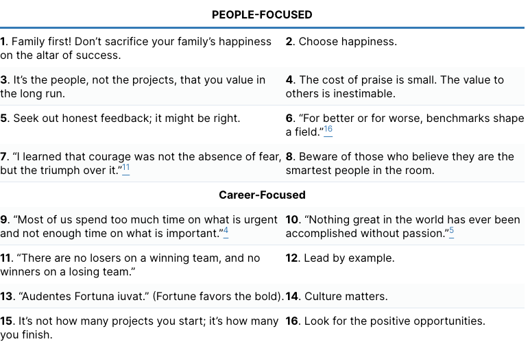

Life Lessons from the First Half-Century of My Career
Life Lessons from the First Half-Century of My Career – Communications of the ACM
"I was wrong. You were right. I love you."

Bad benchmarks can warp careers. Until recently, one company had a highly visible 10-step technical ladder, which led some engineers to pick projects that were the safest path to getting promoted by avoiding high-risk, high-reward projects. In my opinion, that behavior was bad for their careers and bad for the company. In contrast, Hughes Aircraft followed the Bell Labs model, where the only technical titles were Member or Distinguished Member of the Technical Staff, which did not deter risk taking. 糟糕的基准可能会扭曲职业生涯。直到最近，一家公司还制定了一个高度可见的 10 步技术阶梯，这导致一些工程师通过避免高风险、高回报的项目来选择最安全的晋升途径。在我看来，这种行为对他们的职业生涯和公司都不利。相比之下，休斯飞机公司遵循贝尔实验室的模式，其中唯一的技术头衔是技术人员的成员或杰出成员，这并不能阻止冒险行为。
The academic versions of bad career benchmarks—for faculty and their institutions—are “publish or perish” and “dollars or death.” When I arrived, I asked what Berkeley values. The answer was “impact: a positive change in the world.” It didn’t matter about the number of papers or co-authorship with senior faculty, as long as the research had an impact. Papers and funding were the indirect consequences of impact not the actual target. 对于教师及其机构来说，不良职业基准的学术版本是“出版或灭亡”和“美元或死亡”。当我到达时，我问伯克利价值观是什么。答案是“影响：世界发生积极的变化。”只要研究产生影响，论文的数量或与高级教师的合着并不重要。论文和资金是影响的间接结果，而不是实际目标。
I loved that advice. I am grateful now for such a good benchmark to start my career. But keep in mind, we as humans ultimately get to pick our own benchmarks, for our personal lives as well as for our careers. 我喜欢这个建议。我现在很感激有这样一个好的基准来开始我的职业生涯。但请记住，我们作为人类最终要为我们的个人生活和职业生涯选择自己的基准。
Finding time for important, non-urgent tasks takes more initiative and proactivity than for urgent tasks. Success—in life and professionally—is often determined by making the time for important, non-urgent tasks. 腾出时间来完成重要的、非紧急的任务比处理紧急任务需要更多的主动性和主动性。生活和职业上的成功通常取决于为重要的、非紧急的任务腾出时间。
When you’ve been together that long, people ask what your secret is. It’s not that we don’t argue; one repeated source of friction is she tells me a problem she is having in the hope of getting empathy and I, as a good engineer, instead try to solve her problem. The secret is what we say after we resolve a disagreement. Usually one of us repeats these nine magic words: “I was wrong. You were right. I love you.” No substitutions! The last three words can’t be, “You’re a jerk!” And absolutely no additional use of the word “but”. 当你们在一起这么久时，人们会问你的秘密是什么。并不是我们不争论；而是我们不争论。一个反复出现的摩擦来源是，她告诉我她遇到的问题，希望获得同理心，而我，作为一名优秀的工程师，却试图解决她的问题。秘密在于我们解决分歧后所说的话。通常我们中的一个人会重复这九个神奇的词：“我错了。你是对的。我爱你。”没有替代品！最后三个字不可能是： “你是个混蛋！” ”并且绝对没有额外使用“但是”这个词。